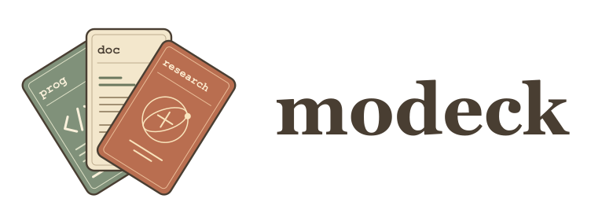
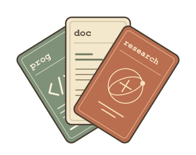

规则、技能，各归其位。
rules 保留你的约定，skills 收好可复用的方法。本地文件与外部 Git 资源，在一份配置里组织，继续保留清晰的资源分类。
rules/skills/Git ↗

开始使用A LITTLE ORDER FOR YOUR AGENTS
规则在这里，技能在那里。换个 agent、换个项目，又要整理一遍。
把 rules、skills 和外部资源收进一副牌组。
由 modeck 集中管理，按项目组合，在会话启动时加载。
本地配置 · 多套方案 · 你熟悉的 agent CLI
LESS SETUP.
MORE FLOW.

不同的 agent，同一套工作习惯
01 / FROM SCATTERED TO COMPOSED
你积累的规则和技能，应该跟着工作模式走。
不必在每个 agent、每个项目里重新维护一份。
BEFORE 分散维护
相似的内容，不同的入口。
项目一换，再复制、再检查。
WITH MODECK 集中组织，按需组合
项目上下文 → 所选 agent 会话
规则正文 + 按需读取的技能索引，
在会话启动时就位。
02 / BUILD YOUR WORKING DECK
编程时带上代码规范，写文档时加入表达习惯。
同一项目，也可以同时需要几种工作模式。
点选卡片，试试组合你的工作模式
.modes prog
通用协作原则、代码规范
代码审查
上面是自定义模式的示意，并非内置模板。在项目的 .modes 中固定组合，或自行编写 modeck-auto.mjs，根据目录、文件与依赖自动选择；初始化的自动脚本默认不选额外模式。
03 / A PLACE FOR WHAT YOU KNOW
rules 保留你的约定，skills 收好可复用的方法。本地文件与外部 Git 资源，在一份配置里组织，继续保留清晰的资源分类。
注册多份配置，选择当前启用的集合。个人习惯与团队规范分别维护、共同组合，绑定的 agent 共用所选配置集合。
用 modeck res init 安装声明的资源，以锁文件记录版本。共享配置与锁文件，让另一台机器恢复相同版本；会话启动时不偷偷下载。
通过原生 SessionStart hook 接入现有工作流。绑定时由 Rulesync 转换 hook 配置，并保留已有 hook；规则与技能由 modeck 组织和加载。
04 / DEAL YOUR FIRST DECK
通过 npm 安装 modeck，支持 macOS / Linux。
准备 Node.js 22.20.0+ 与所需 agent CLI。
npm install -g modeck@0.1.1创建并进入自己的配置目录，
按引导选择 agent、导入资源。
modeck init在同一配置目录注册。
个人与团队配置都可以加入。
modeck register选择启用的配置、绑定 agent。
然后进入业务项目，启动 agent。
modeck config使用 Codex 时，还需在 /hooks 中审查并信任安装的定义。
配置变化后，重新启动会话以加载新的上下文。